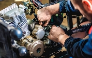

Jadwal Servis
Info lebih lanjut mengenai jadwal servis selengkapnya dapat anda lihat disini.
SelengkapnyaPencegahan pemeliharaan
Kunci untuk menjaga kinerja, performa, dan umur panjang kendaraan Anda.
Selengkapnya 
Servis Perbaikan
Menjaga kondisi optimal kendaraan Anda dan mengatasi masalah yang mungkin timbul.
SelengkapnyaTune-up performa
penyesuaian dan perbaikan untuk meningkatkan kinerja mesin pada motor Anda.
SelengkapnyaUlasan Pelanggan
“ Pelayanan sangat memuaskan. Pengerjaan rapih dan cepat. Sangat recommended. ”
Han Lue “ Mantap. Setelah servis disini motor saya jadi nyaman kembali. Harga sparepart sangat terjangkau. ”
Dominic Toretto